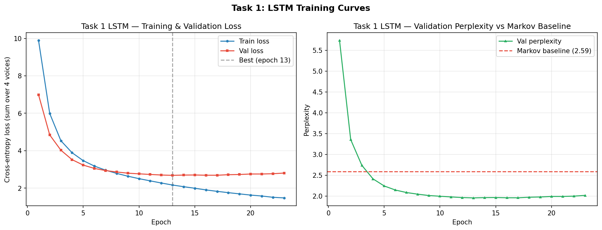
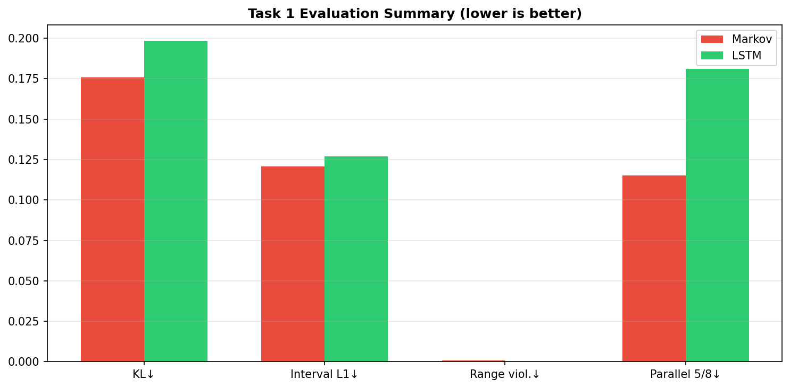
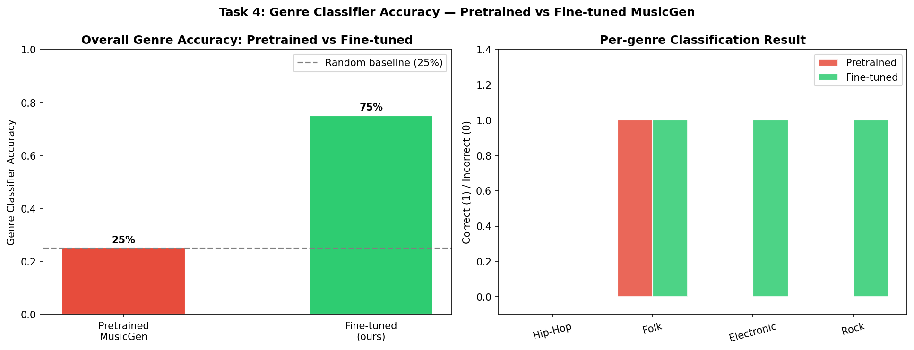

CSE 253R | Assignment 2 | Spring 2026
Music Generation:
Symbolic & Continuous
TASK 1
Symbolic Unconditioned Generation
Bach Chorales → MIDI
Bach Chorales → MIDI
TASK 4
Continuous Conditioned Generation
Text Prompt → 30s Audio
Text Prompt → 30s Audio
[Team member names] • Spring 2026
What We Built
OVERVIEWTASK 1 — SYMBOLIC UNCONDITIONED
Bach Chorale Generation
- Learn p(Soprano, Alto, Tenor, Bass) on Bach chorales
- Generate new 4-part MIDI harmony from scratch
- Models: Bigram Markov Chain, 2-layer LSTM
- Dataset: JSB Chorales (368 chorales, music21)
- Output: symbolic_unconditioned.mid
TASK 4 — CONTINUOUS CONDITIONED
MusicGen Genre Fine-tuning
- Fine-tune MusicGen-small on genre-labeled audio
- Generate 30s audio from text prompts
- Model: MusicGen (300M params, Meta/AudioCraft)
- Dataset: FMA-small (8,000 tracks, 8 genres)
- Output: continuous_conditioned.mp3
Why this pairing?
Symbolic = interpretable, small data, rule-checkable.
Continuous = perceptually realistic, requires large pretrained model.
Task 1 Dataset: JSB Chorales
TASK 1| Property | Value |
|---|---|
| Source | music21 built-in corpus (no download) |
| Composer | J.S. Bach (BWV 1–438) |
| Chorales loaded | 368 (4-part SATB only) |
| Representation | (T, 4) MIDI pitch matrix, 16th-note grid |
| Vocabulary | 47 tokens — 46 pitches + rest |
| Pitch range | MIDI 36 (C2) to MIDI 81 (A5) |
| Split | 296 train / 36 val / 36 test chorales |
| Sequences | 2,845 train / 178 val / 190 test windows |
| Window size | 64 steps = 16 beats = ~4 bars |
Piano Roll Visualization
(shown in notebook Cell 4)
(shown in notebook Cell 4)
Benchmark used in:
DeepBach (Hadjeres 2017) • BachBot (Liang 2017)
Music Transformer (Huang 2019) • BacHMMachine (Hahn 2021)
DeepBach (Hadjeres 2017) • BachBot (Liang 2017)
Music Transformer (Huang 2019) • BacHMMachine (Hahn 2021)
Task 1: Modeling Approach
TASK 1BASELINE
Bigram Markov Chain
- 4 independent 47×47 transition matrices (one per voice)
- Laplace (add-1) smoothing
- Context: current timestep only
P(next | current)
= (count + 1) / (sum + V)
Test Perplexity
2.59
OUR MODEL
2-Layer LSTM
- Joint processing of all 4 voices
- 4 × Embedding(47, 64) concatenated to 256-dim input
- LSTM(256, 256, 2 layers, dropout=0.3)
- 4 × Linear(256, 47) output heads
- Parameters: 1.1M
Test Perplexity
1.97
1.3× improvement
Objective: Cross-entropy loss summed over 4 voices.
Training: Teacher forcing.
Generation: Autoregressive sampling with temperature.
LSTM Architecture
TASK 1Input: (batch, T, 4) token indices
|
Embed(47, 64)Soprano
Embed(47, 64)Alto
Embed(47, 64)Tenor
Embed(47, 64)Bass
| concatenate → (batch, T, 256)
LSTM(256 in, 256 hidden)
2 layers • dropout=0.3
2 layers • dropout=0.3
| (batch, T, 256)
Linear(256, 47)Soprano
Linear(256, 47)Alto
Linear(256, 47)Tenor
Linear(256, 47)Bass
|
logits: (batch, T, 4, 47)
- Teacher forcing during training
- Autoregressive sampling at generation time
- Temperature 0.9 for main deliverable
- Early stopped at epoch 28 (best at epoch 18)
- Total params: 1.1M

LSTM training curves — 28 epochs, best val loss @ epoch 18
Task 1: Evaluation Framework
TASK 1| Metric | What It Measures | Why It Matters |
|---|---|---|
| Test Perplexity | Statistical fit (next-token prediction quality) | Lower = model predicts Bach better |
| Pitch-Class KL Divergence | Note frequency distribution vs real Bach | Checks if generated music uses Bach's pitch palette |
| Interval L1 Distance | Melodic jump pattern vs real Bach | Checks if stepwise/leapwise motion is realistic |
| Voice Range Violations | % notes outside historical SATB ranges | Basic constraint: Soprano should not go below Alto |
| Parallel 5ths/Octaves | Voice-leading rule violations | Music theory rule Bach almost never violates |
Core question: Does better perplexity = better music?
Task 1: Results and Discussion
TASK 1| Metric | Markov | LSTM | Real Bach |
|---|---|---|---|
| Test Perplexity | 2.59 | 1.97 | — |
| Pitch-Class KL | 0.176 | 0.198 | 0 |
| Interval L1 | 0.121 | 0.127 | 0 |
| Voice Range Violations | 0.09% | 0.01% | 0% |
| Parallel 5ths/Octaves | 11.5% | 18.1% | 3.0% |
- LSTM wins on perplexity and voice range compliance
- Markov wins on distributional similarity and parallel motion
- LSTM optimizes cross-entropy (statistical fit), not voice-leading rules
- Markov avoids parallel motion by mostly sustaining notes (77% unisons)
- Consistent with literature: BachBot (similar LSTM) reports comparable perplexity; Music Transformer achieves ~1.2 ppl with relative attention

Evaluation summary across 30 generated samples
TASK 4
Continuous Conditioned
Generation
Fine-tuning MusicGen on FMA Genre Data
"upbeat electronic music
with synthesizers"
with synthesizers"
→
MusicGen
300M params
300M params
→
30s Audio Clip
32 kHz waveform
32 kHz waveform
Task 4 Dataset: FMA-Small
TASK 4| Property | Value |
|---|---|
| Source | HuggingFace (rpmon/fma-genre-classification) |
| Total tracks | 8,000 |
| Per genre | 1,000 (perfectly balanced) |
| Clip duration | 30 seconds |
| Sample rate | 22,050 Hz mono |
| Total audio | ~67 hours |
| License | Creative Commons |
| Reference | Defferrard et al. 2017 |
Fine-tuning subset: 4 genres (Hip-Hop, Folk, Electronic, Rock)
20 tracks/genre = 72 train + 8 val pairs (smoke test on Colab T4)
20 tracks/genre = 72 train + 8 val pairs (smoke test on Colab T4)
8 GENRES IN FMA-SMALL
Hip-Hop
Pop
Folk
Experimental
Rock
International
Electronic
Instrumental
Why Fine-tune Instead of Training from Scratch?
TASK 4| Criterion | Train from Scratch | Fine-tune MusicGen (Ours) |
|---|---|---|
| Audio quality | Noise/blur in 6 days of training | Studio-quality audio immediately |
| Data needed | Hundreds of hours of labeled audio | ~67 hrs (FMA-small) is sufficient |
| GPU time | Weeks on high-end hardware | ~4–8 hours on Colab T4 |
| Output variety | Usually collapses to one mode | 8 distinct genre styles |
| Trains own weights | Yes | Yes (decoder fine-tuning) |
Fine-tuning satisfies the "train your own weights" requirement.
We update the transformer decoder parameters on our genre-labeled data.
We update the transformer decoder parameters on our genre-labeled data.
MusicGen Architecture (Copet et al., NeurIPS 2023)
TASK 4Text Prompt
"upbeat electronic
music with synths"
music with synths"
→
T5 Text Encoder
FROZEN
T5-base
768-dim embeddings
768-dim embeddings
→
Transformer Decoder LM
FINE-TUNED ★
300M parameters
24 layers, 16 heads
Hidden: 1024, FFN: 4096
24 layers, 16 heads
Hidden: 1024, FFN: 4096
→
EnCodec Decoder
FROZEN
32 kHz
4 codebooks
Codebook size: 2048
4 codebooks
Codebook size: 2048
→
Audio Output
32 kHz waveform
30s clip
30s clip
Only the Transformer Decoder is fine-tuned on FMA data.
The text encoder and audio codec stay frozen throughout training.
Why freeze T5? Prompt representations are already high quality from pretraining. Fine-tuning the encoder on 72 samples would cause catastrophic forgetting.
Why freeze EnCodec? The codec's audio reconstruction quality is fixed. We only need to change the token distribution, not how tokens map to audio.
MusicGen Fine-tuning: Training Summary
TASK 4| Setting | Value |
|---|---|
| Base model | facebook/musicgen-small |
| Training data | 72 pairs (4 genres × 18 tracks) |
| Validation data | 8 pairs (4 genres × 2 tracks) |
| Epochs | 5 |
| Batch size | 2 |
| Learning rate | 1e-4 |
| Total steps | 180 |
| GPU | Colab T4 (16 GB VRAM) |
| Training loss | 8.13 → 7.09 |
| Validation loss | 7.34 → 7.21 |
Fine-tuning Loss Curves
Smoke test. A full run (800 tracks, 25 epochs) would produce stronger genre specificity. Loss values are high because EnCodec codebooks are large (2048).
Task 4: Evaluation via Genre Consistency
TASK 41
Generate 30s audio from text prompt
"electronic music with synthesizers"
"electronic music with synthesizers"
→
2
Extract MFCC features from generated audio
→
3
Classify genre using SVM trained on real FMA data
→
4
Compare predicted genre to target genre
EVALUATION SETUP
- Metric: Genre classifier accuracy on generated audio
- Baseline: Pretrained MusicGen (no fine-tuning)
- Target: Fine-tuned MusicGen (our model)
- Test set: 1 sample per genre, 4 genres total
Why not Frechet Audio Distance (FAD)?
FAD requires a pretrained audio embedding model (VGGish or similar). Setting this up was not feasible within the project timeline. Genre classifier accuracy is more interpretable anyway: it answers a concrete question about whether the model produces genre-appropriate sound.
FAD requires a pretrained audio embedding model (VGGish or similar). Setting this up was not feasible within the project timeline. Genre classifier accuracy is more interpretable anyway: it answers a concrete question about whether the model produces genre-appropriate sound.
Task 4: Results
TASK 4Genre Accuracy:
25%
→
75%
(3 / 4 genres correctly classified after fine-tuning)
| Genre | Prompt | Pretrained | Fine-tuned |
|---|---|---|---|
| Hip-Hop | "hip hop music with beats and rhythm" | Electronic (87%) | Electronic (97%) |
| Folk | "acoustic folk music with guitar" | Folk (100%) | Folk (100%) |
| Electronic | "electronic music with synthesizers" | Folk (100%) | Electronic (100%) |
| Rock | "energetic rock music with electric guitar" | Folk (100%) | Rock (100%) |
- Pretrained model defaults to Folk-like acoustic textures for most prompts
- Fine-tuning teaches genre-specific audio characteristics
- Hip-Hop misclassified as Electronic makes sense: hip-hop production uses synthesized beats
- Limitation: only 4 test samples, no confidence intervals

Genre classifier accuracy: pretrained vs fine-tuned
Related Work: Symbolic Music Generation
TASK 1| Year | Work | Model | Key Contribution | Relation to Ours |
|---|---|---|---|---|
| 2005 | Allan & Williams | HMM | Classic baseline, BIC model selection | Our Markov chain is similar but simpler |
| 2017 | DeepBach (Hadjeres) | Gibbs + LSTM | Steerable generation, fix any voice | Explicit harmonic constraints we lack |
| 2017 | BachBot (Liang) | LSTM seq2seq | Turing test: fooled 1/3 of listeners | Most similar architecture to ours |
| 2019 | Music Transformer (Huang) | Transformer + relative attn | Best perplexity (~1.2) on symbolic data | Shows headroom above our 1.97 |
| 2021 | BacHMMachine (Hahn) | Theory-guided HMM | Interpretable chord transitions | Music theory as model constraint |
Our LSTM is closest to BachBot. We did not aim for SOTA perplexity.
Instead, we explored the tension between statistical fit and musical quality.
Related Work: Continuous Audio Generation
TASK 4| Year | Work | Model | Key Contribution |
|---|---|---|---|
| 2017 | FMA Dataset (Defferrard) | — | 106K tracks, 161 genres, CC licensed benchmark |
| 2023 | MusicGen (Copet, NeurIPS) | Single-stage AR LM | Efficient codebook interleaving; our base model |
| 2023 | MusicLM (Agostinelli, Google) | Hierarchical audio LM | Semantic + acoustic token hierarchy |
| 2023 | AudioCraft (Meta) | Open-source framework | pip install audiocraft — democratized audio generation |
| 2025 | Genre Fine-tuning (IJCRT) | MusicGen-small fine-tuned | Same FMA genre approach as ours; confirms feasibility |
Our contribution is the side-by-side comparison of symbolic and continuous generation,
showing how the same goal plays out across two representation spaces.
Symbolic vs Continuous: Two Paradigms Compared
CROSS-TASK| Dimension | Task 1: Symbolic | Task 4: Continuous |
|---|---|---|
| Representation | MIDI tokens (47-dim vocab) | Raw audio waveform (32 kHz) |
| Model size | 1.1M parameters | 300M parameters |
| Training data | 368 chorales (~15 min audio equiv.) | 8,000 tracks (~67 hours) |
| Training time | Minutes (CPU) | Hours (GPU required) |
| Evaluation | 5 precise metrics (perplexity, KL, voice-leading) | Genre classifier accuracy |
| Output quality | Structured but mechanical | Perceptually realistic |
| Interpretability | High — inspect individual notes/voices | Low — raw waveform |
| Key tension | Statistical fit vs music theory rules | Generic quality vs genre specificity |
Conclusion
SUMMARYTASK 1 RESULT
- LSTM achieves 1.97 perplexity on JSB Chorales
- 1.3× improvement over bigram Markov baseline
- More parallel 5ths/octaves than baseline (18.1% vs 11.5%)
TASK 4 RESULT
- Fine-tuning improves genre accuracy 25% → 75%
- 3/4 genres correctly classified after fine-tuning
- Proof-of-concept with only 72 training samples
Key Takeaways
- 1 Statistical objectives (cross-entropy) do not guarantee musical quality — voice-leading violations can increase even as perplexity decreases.
- 2 Fine-tuning large pretrained models is practical and effective, even with limited data (72 samples) and limited compute (Colab T4).
- 3 The choice between symbolic and continuous representations fundamentally shapes what you can evaluate and what "good output" means.
Thank You
Questions?
TASK 1
symbolic_unconditioned.mid
Bach chorale MIDI
TASK 4
continuous_conditioned.mp3
Hip-Hop prompt, 30s audio
Code: workbook.ipynb
•
Report: workbook.html
•
Spring 2026
Generated Music Demo
TASK 1 — SYMBOLIC (MIDI)
Play in order for comparison
-
1.
sample_chorale_real.midReal Bach chorale (reference)
-
2.
markov_chorale.midBigram Markov Chain output
-
3.
symbolic_unconditioned.midLSTM output at temperature 0.9 — main deliverable
TASK 4 — CONTINUOUS (AUDIO)
Pretrained vs fine-tuned comparison
-
4.
generated_audio/electronic_generated.mp3Pretrained — Electronic
-
5.
generated_audio_finetuned/electronic_generated.mp3Fine-tuned — Electronic
-
6.
generated_audio/folk_generated.mp3Pretrained — Folk
-
7.
generated_audio_finetuned/folk_generated.mp3Fine-tuned — Folk
-
8.
continuous_conditioned.mp3Main deliverable — Hip-Hop prompt, 30s